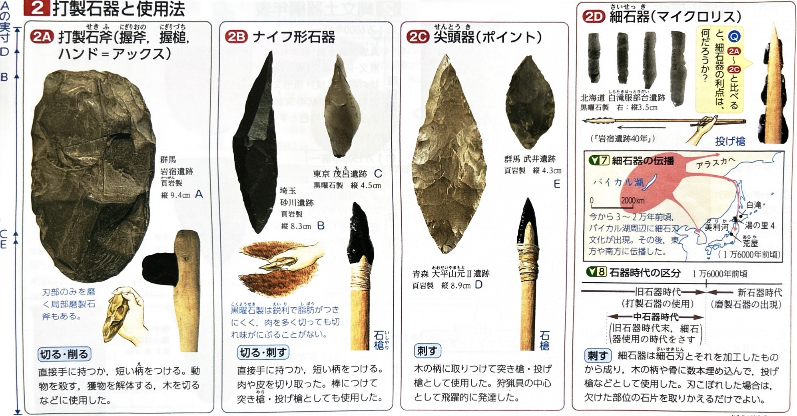

001 文化の始まり（旧石器〜縄文時代）
年表で見る 日本列島のあけぼの
約700万年前〜
人類誕生。猿人（アウストラロピテクスなど）→原人（北京原人など）→旧人（ネアンデルタール人など）→新人（ホモ＝サピエンス）と進化を遂げた。現在の現生人類はすべて新人に属する。
約258万年前〜
地質学の時代区分で更新世（洪積世ともいう）。寒冷な氷期と、比較的温暖な間氷期が繰り返された氷河時代。日本列島は大陸と地続きになる時期があり、北からはマンモス、南からはナウマンゾウやオオツノジカなどの大型動物が渡来した。使用道具による区分では旧石器時代に当たる。
約3万8000年前〜
日本列島に人類が渡来し定着し始めたと推測される。この時代の化石人骨として、静岡県の浜北人や、沖縄県の港川人・山下町第一洞人・白保竿根田原洞穴人などが発見されている（これらはすべて新人）。※かつて旧人とされた明石人骨は、のちの研究で新人と判明した。
約1万1700年前〜
最後の氷期が終了して気候が温暖化。地質学では完新世（沖積世）へ移行。氷床が溶けて海面が上昇し（縄文海進）、現在の日本列島がほぼ形成される。植生も変化し、東日本ではブナやナラなどの落葉広葉樹林、西日本ではシイやカシなどの照葉樹林が広がった。
1949年
在野の考古学者である相沢忠洋が群馬県の岩宿遺跡において、更新世の地層である関東ローム層の中から打製石器を発見。それまで否定されていた日本列島の旧石器時代の存在が初めて証明された。

テーマ別詳細（道具・生活・信仰）
-
旧石器時代の石器の変遷
石を打ち砕いて作る打製石器を使用。初期は楕円形の握斧（ハンドアックス）などが使われ、のちに獲物を解体するためのナイフ形石器（ブレード）や、槍の先につける尖頭器（ポイント）が発達した。
末期になると、中国東北部やシベリアから細石器（マイクロリス）の技法が伝わった。これは小型の石刃を木や骨の柄にはめ込んで使うもので、より高度な狩猟を可能にした。また、伐採用の局部磨製石斧も一部で見られる。 -
縄文文化の道具の出現
気候の温暖化に伴い、すばしっこい中・小型獣（ニホンジカやイノシシ）が増加。これらを射止めるために弓矢が発明された。
また、木の実などの植物性食料を煮たり、貯蔵したりするために土器（縄文土器）が作られた。縄文土器は低温で焼かれるため厚手でもろく、表面が黒褐色をしている。時期によって、草創期（無文・隆起線文）、前期、中期（火焔型土器など装飾が過剰）、後期、晩期（亀ヶ岡式土器）と変遷する。
木を伐採・加工するための全面磨製石器（石斧）や、木の実をすりつぶすための石皿・すり石、動物の骨や角で作られた釣針や銛などの骨角器も普及した。 -
生活形態と集落
旧石器時代は大型動物を追って移動する遊動生活（テント式小屋や洞穴に居住）だったが、縄文時代には食料確保が安定し、地面を掘り下げて屋根をかけた竪穴住居による定住生活が始まった。
海岸近くには、人々が食べた貝殻や動物の骨、不要になった土器などを捨てた貝塚が形成された。1877年にアメリカ人のお雇い外国人モースが東京の大森貝塚を発掘し、これが「日本近代考古学の出発点」とされる。
集落は広場を中心に複数の住居が囲む環状集落が一般的で、青森県の三内丸山遺跡（巨大な掘立柱建物跡や栗の栽培跡）のような大規模な定住集落も発見されている。 -
広域な交易ルート
特定の地域でしか産出しない石材が遠方の遺跡から発見されており、広範囲な交易があったことがわかる。
矢じりなどに使われたガラス質の石である黒曜石（長野県和田峠、北海道十勝岳など）、装身具にされたヒスイ（硬玉：新潟県姫川流域）、サヌカイト（香川県白峰山、奈良県二上山など）が代表的である。 -
精神生活・信仰・風習
あらゆる自然物や自然現象に霊威・精霊が宿ると信じるアニミズム（精霊崇拝）の精神が生まれた。
豊かな収穫や安産を祈るため、女性や妊婦をかたどった土偶や、男性のシンボルを模した石棒が作られた。
死者を埋葬する際には、手足を強く折り曲げる屈葬の風習があった。これは死者の霊の災いを防ぐため、あるいは胎児の姿勢を真似て再生を祈るためとされる。
また、成人の通過儀礼や服喪の印として、健康な歯を意図的に抜く抜歯の風習も広範囲で見られた。後期〜晩期の東日本では、共同墓地とされるストーンサークル（環状列石）も作られた（秋田県大湯環状列石など）。
確認クイズ